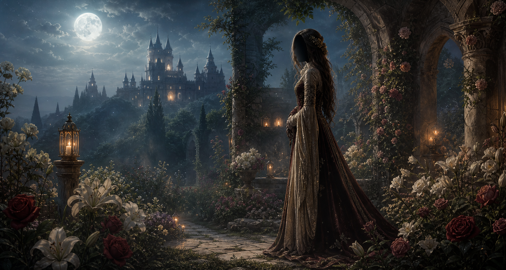

Anonymous medieval confessions
Sketch the Face Behind Your Feelings
Search a name whispered beneath the roses, then open the sealed paper confession and the sketch hidden inside it.
The confession chamber
Write What the Roses Kept Quiet
Send an anonymous paper confession with a sketch from memory.
The portrait from memory
Sketch their face
The paper archive
Letters Waiting Beneath the Gold Seal
Open a saved paper to read the confession and see the sketch beside it.